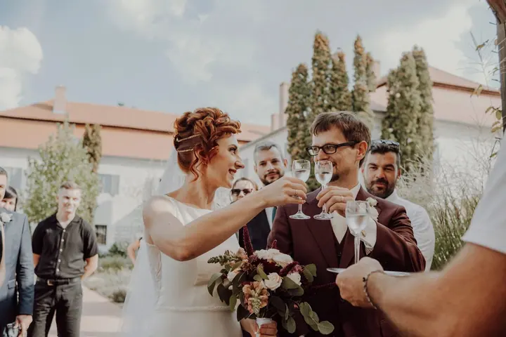
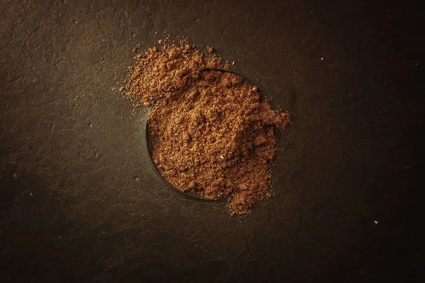
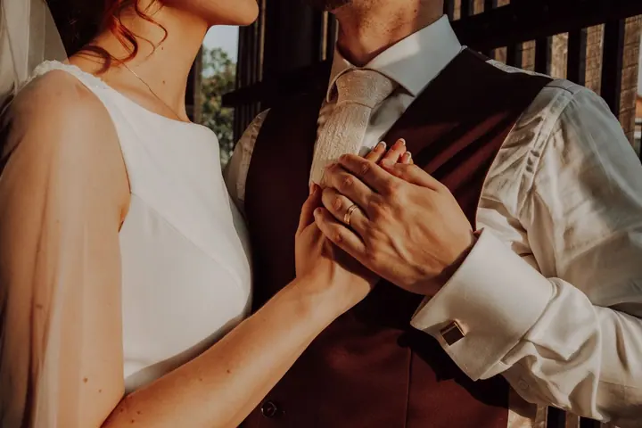

01 / 04
Svatební focení
Reportážní svatební focení jako z filmu o vaší lásce. Autentické a nestrojené fotky, které vám připomenou, jak jste se ten den cítili.
Zeptat se na termín→






Svatby jako z filmu o vaší lásce
Zeptat se na termín →(01) Ahoj
Jmenuji se Jan Mrázek, ale všichni mi říkají Honza. Fotím svatby , páry a portréty i firmy a jejich značky v Olomouci, v Brně a po celé republice. Dělám fotky jako z filmu, které ukazují, jaké to bylo, nejen jak to vypadalo.
9+let za objektivem
(02) Co fotím
01 / 04
Reportážní svatební focení jako z filmu o vaší lásce. Autentické a nestrojené fotky, které vám připomenou, jak jste se ten den cítili.
Zeptat se na termín→02 / 04
Filmové portréty pro páry ve městě, v přírodě i v ateliéru. Na památku, pro rodinu, nebo jen tak pro vás dva.
Zeptat se na termín→03 / 04
Osobní fotky podle toho, co vás vystihuje, co milujete a pro co žijete. Žádná rychlá procházka s pár cvaky, čas je jen váš.
Zeptat se na termín→Dále nabízím
Firemní portréty, jídlo, eventy, nemovitosti, produkty a obsah pro sociální sítě. Fotím tak, aby vaše fotky prodávaly a budovaly důvěru.
↗(03) Portfolio
Kliknutím fotku zvětšíte · fotografie jsou ilustrační
(04) Postup
Od první zprávy po hotovou galerii.
Krok 1 z 4
Pošlete mi termín a pár slov o tom, co chcete fotit. Ozvu se vám, jestli mám volno, a domluvíme se na dalším kroku.
Krok 2 z 4
Ke každému focení přistupuji individuálně. Probereme vaše představy, místo i atmosféru a já přijdu s konceptem a nápady.
Krok 3 z 4
Na začátku prohodíme pár slov a naladíme se na sebe. Povedu vás tak, že se uvolníte a na foťák brzy zapomenete.
Krok 4 z 4
První ukázky můžete mít někdy už za pár hodin. Finální upravené fotky dostanete v online galerii v dohodnutém termínu.

Fotky, co ukazují, jaké to bylo
(05) Za objektivem
Fotografie mě fascinovala vždycky. Svět vnímám přes světlo, emoce a příběhy lidí kolem mě. První svatbu jsem fotil ve třinácti, a to svým rodičům. Dnes za foťákem stojím profesionálně přes devět let a k tomu přes patnáct let dělám grafiku a postprodukci.
Věřím, že za každou dobrou fotkou je vztah mezi fotografem a člověkem před objektivem. Proto se nejdřív zajímám o vás: o váš příběh, vaši značku a o to, co chcete fotkami říct. Na svatbě jsem vnímavý nenápadný pozorovatel, ale taky ten, kdo rozesměje babičku. U firem zase využívám svůj marketingový background, abyste dostali fotky, které za vás prodávají.
Když nefotím, miluju klidná rána, výběrové kafe, svou Káťu a lidi, kteří si dovolí být sami sebou. Vypadám na slušňáka, ale po nocích poslouchám death metal, pak drum and bass a nakonec klasiku. Žiju v Olomouci, pravidelně fotím v Brně a foťák se mnou rád cestuje po celém Česku.
Jan
Jan Mrázek · Svatební, portrétní a brandový fotograf
Vůbec ne. Ze začátku je to vždycky trochu nervózní, ale povedu vás tak, že se uvolníte. Nejlepší fotky vznikají, když zapomenete, že se vlastně fotí.
Žiju v Olomouci a pravidelně fotím v Brně, ale jezdím po celé Moravě i Čechách. Fotit můžeme ve městě, v přírodě i v ateliéru, podle toho, co je vám blízké.
Love session (zhruba hodina focení, 15 upravených fotek) stojí 5 000 Kč, Boosted Love session se 40 upravenými fotkami 9 000 Kč. V Olomouci je doprava zdarma, mimo ni počítám 8 Kč/km.
U párového focení do 2–4 týdnů. První ukázky posílám někdy už za pár hodin a u svateb i firemních zakázek se na termínu dodání vždy předem domluvíme.
Ano. Fotím firemní portréty, brand a image fotky, produkty, jídlo, eventy, nemovitosti i obsah pro sociální sítě. Díky marketingové praxi vím, jaké fotky vaší značce pomůžou.
(07) Kontakt
Napište pár vět o tom, co si představujete, a termín, který se vám hodí.